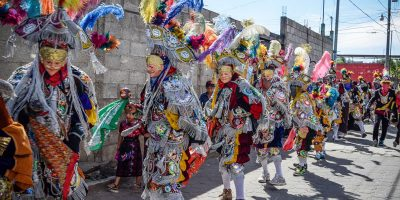
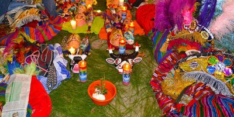

Costumbres y tradiciones
El departamento de Chimaltenango posee varias tradiciones culinarias típicas, como la elaboración de los panes de feria, los dulces típicos los cuales se elaboran en gran variedad y formas, el atol blanco, las enchiladas, manías, las rosquitas, el rosario, etc.
En la tradición indígena la religión se basa en la naturaleza y los antepasados, quienes establecen el equilibrio entre lo sagrado y lo profano. Existe un mediador entre estos dos mundos que es el Ajch'ab'äl, sabio anciano rezador, quien además es médico brujo o Aq'omanel.
Sus costumbres y tradiciones incluyen "El encuentro de la candela", una celebración religiosa popular que se lleva a cabo en la cabecera departamental cada 25 de julio, en víspera de la feria patronal. Se trata de procesiones religiosas que resultan en el encuentro de la imagen de la patrona Santa Ana y su esposo San Joaquín con el Apóstol Santiago, en la cual los Mayordomos Alcaldes de las 5 cofradías portan las candelas, acompañados por los demás cofrades, autoridades e invitados, dirigiéndose a caballo al entronque de Los Aposentos, punto en cual las Texeles y población esperan al pie de las imágenes a los jinetes para realizar el acto ceremonial del encuentro de las candelas con las Milagrosas imágenes para que estas derramen su bendición y que las candelas sean la luz de Dios en la población, para contar con buenas cosechas, salud, abundancia, protección de desastres naturales y aleje los malos espíritus, para luego dirigirse en procesión acompañados del baile de la conquista, torritos, gigantes que danzan al compás de los sones interpretados por la marimba, tamborón, chirimilla, sin faltar el aroma a pon e incienso, y la quema de pólvora, hacia la casa de la cofradía patronal, donde se pueblo el general es participe de la celebración.
Otra ceremonia religiosa de alta originalidad, son los casamientos, que comprenden desde el enamoramiento, la pedida de la novia por el anciano sabio, hasta culminar con la ceremonia del casamiento realizado bajo rituales mayenses y católicos.
Otra festividad religiosa de gran trascendencia es la del año nuevo maya (Waqxaqi'B'atz), que se calcula en base al tzolkin o calendario agrícola indígena de 260 días, que rige toda la religiosidad del área cakchiquel de Chimaltenango.
Chimaltenango posee gran cantidad cultural y étnica a lo que se refiere costumbres religiosas.